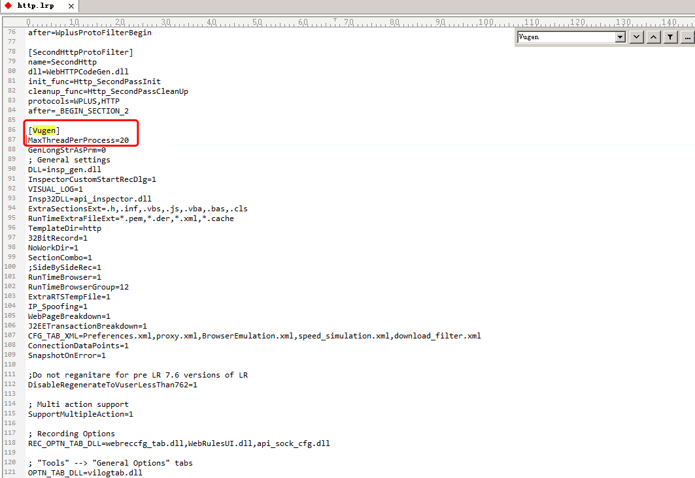

Loadrunner报错信息整理
【问题】Error -10776 Failed to find .cfg file
错误分析：在loadrunner打开脚本的情况下，运行磁盘清理工具，导致运行打开的脚本时，提示Mdrv error：Failed to find .cfg file MsgId:MERR-10777
解决方法：从其它文件夹拷贝3个文件到不能正常运行脚本的文件夹下：
- default.cfg
- default.usp
- *.prm（将*的位置改为脚本的名字）
再次运行脚本，可以正常运行
【问题】 Error -13874: missing newline in C:\Users\Administrator\AppData\Local\Temp\brr_YAR.13\netdir\C\TestingResult\StressTest.2\Script\交强险投保\username.dat
错误分析：The .dat file needs to have an empty line at the bottom of the file. Also, not sure if all your data is on one line,。
解决办法：Put your cursor on it innotepad/whatever you are using to edit your dat files， note that is an empty line at the bottom。
【问题】Fatal Error -26000: Not enough memory (12320 bytes) for "new buffer in LrwSrvNetTaskItem::AllocSrvNetBuf". Aborting
错误分析：报错的时候发现任务管理器里mmdrv.exe 内存占用一直增大,最红mmdrv.exe崩溃（LR兼容C，C语言中内存要手动释放）,或报错原因未脚本中设置使用thread线程执行，线程之间共享内存，所以共享内存出现异常也会导致此报错信息，可以换成进程process方式执行场景。
解决办法：注意内存的使用,尽量减少变量声明,new 的变量用完后要及时用free:
注：web_reg_save_param_ex可能存在消耗资源较多的情况，一般不建议使用，更换成web_reg_save_param进行尝试
【问题】回放时lr报错：Error -26488: Could not obtain informationabout submitted file
错误分析：一般情况下上传文件脚本，会报这个错误，原因为找不到文件
解决办法：录制完脚本后，把要上传的文件放到脚本存放的文件夹里面，重新回放就ok
【问题】 Error -26601: Decompression function (wgzMemDecompressBuffer) failed, return code=-5 (Z_BUF_ERROR), inSize=0, inUse=0,
问题原因：这个错误为数据包较大，未下载完整或其他原因导致解压错误。
解决办法：
- Runtime-setting--->Internet Protocol--->Preferences--->Options--->General->Network buffer size，设置为122880（默认值为12288）
- Runtime-setting--->Internet Protocol--->Preferences--->Options--->General->Default block size for Dom memory，设置为163840（默认值为16384）
【问题】Error-26608: HTTP Status-Code=504(Gateway Time-out)
解决办法：
- 1.在Vuser Generator中的Tools--->Recording Options...--->Recording--->HTTP-based script--->HTML Advanced按钮--->在Script type中选择A script containing explicit URLs only(e.g.web_url,web_submit_data)点击“ok”即可
- 2.runtime-setting, browser emulation, 取消选择download non-HTML resources即可
【问题】Error -26610: HTTP Status-Code=502 (Bad Gateway) for "https://***s.com/login/login"
【问题】Error -27727: Step download timeout (120 seconds) has expired when downloading resource(s).
错误分析：对于HTTP协议，默认的超时时间是120秒（可以在Run-time Settings中修改），客户端发送一个请求到端还没有返回结果，则出现超时错误。
解决办法：Set the "Step Timeout caused by resources is a warning" Run-Time Setting to Yes/No to have this message as a warning/error, respectively
【问题】 Error -27728: Step download timeout (120 seconds) has expired
错误分析：对于HTTP协议，默认的超时时间是120秒（可以在Run-time Settings中修改），客户端发送一个请求到端还没有返回结果，则出现超时错误。
解决办法：首先在运行环境中对超时进行设置，默认的超时时间可以设置长一些，再设置多次迭代运行，如果还有超时现象，需要在“Runtime Setting”>“Internet Protocol：Preferences”>“Advanced”区域中设置一个“winlnet replay instead of sockets”选项，再回放是否成功
【问题】 Error -27791: Server "pcisstage.zsins.com" has shut down the connection prematurely
解决办法：测试中，并发200,300,400人时，LR没报错，在并发500人时，LR报错”Error -27791: Server "172.16.xx.xxx" has shut down the connection prematurely“，同时查看WEB服务器日志：出现这样一条信息：
”INFO: Maximum number of threads (200) created for connector with address null and port 8081“
查看配置文件参数：
<Connector port="8080" protocol="HTTP/1.1"
connectionTimeout="20000"
redirectPort="8443" />
采用的是默认配置，这样在高并发情况下肯定撑不住，所以修改参数配置如下：
<Connector port="8081" protocol="HTTP/1.1"
maxThreads="500" acceptCount="500" connectionTimeout="20000"
redirectPort="8443" />
重新测试，事物全部成功，系统也未报错。
出现”Error -27791: Server "172.16.xx.xxx" has shut down the connection prematurely“的原因即有可能是操作系统网络线程连接资源的原因，也可能是应用软件的原因，当出现问题，随时查看系统日志，能帮助我们更快的定位问题。
【问题】Error -27796: Failed to connect to server "10.2.9.147:80":
解决办法：runtime-setting, browser emulation, 将默认勾选的simulate a new vuser on each iteration取消勾选
【问题】Error -29724 : Failed to deliver a p2p message from parent to child process, reason - communication error.
可能引起的原因，
- 1.查看压力机的内存和CPU的使用率，CPU使用率有点高，估计引起的此问题
- 2.共享内存溢出，也可能出现这个问题
解决方法 ：
- $installationfolder$\dat\channel_configure.dat
- $installationfolder$\launch_service\dat\channel_configure.dat
在这两个文件中的[general]部分下添加如下配置。
shared_memory_max_size=100 (修改共享内存为100MB，默认是50MB)
重新启动Controller，问题解决。
【问题】Error -30935 "Error: Failed to send data by channels – post message failed."
解决办法1： 在LR的controller负载生成器的菜单栏，单击【Diagnostics】》configuration》Web Page Diagnostics【Max Vuser Sampling 10%】设置为【Eenable】。
解决办法2：直接去掉勾选Enable the following diagnostics即可。
【问题】Error -35061: No match found for the requested parameter "CorrelationParameter_2". Check whether the requested boundaries exist in the response data. Also, if the data you want to save exceeds 256 bytes, use web_set_max_html_param_len to increase the parameter size [MsgId: MERR-35061]
解决办法1：可以用web_set_max_html_param_len增加参数长度，我试过到99999999共8位
web_set_max_html_param_len("9999999"); // 以消耗系统资源为代价
解决办法2：还有，你可以在
web_reg_save_param_ex(
"ParamName=CorrelationParameter_3", "LB=c",
"RB=>\n<table border",
后面 加上 "NotFound=warning", 保存编译下，就不回再提是错误了。 主要是自动关联造成的左右边界定位不精确，需要保存的值大
【问题】Error -60990 : Two Way Communication Error: Function two_way_comm_post_message / two_way_comm_post_message_ex failed.
在做JAVA接口性能测试时，场景在运行中出现：Code - 60990 Error: Two Way Communication Error: Function two_way_comm_post_message /two_way_comm_post_message_ex failed.错误
及Code - 10343 Error: Communication error: Cannot send the message since reached the shared memory buffer max size错误，一般解决的方法如下：
可能的原因一：
共享内存缓存溢出，造成Controller和Load Generator之间通讯出现问题。
解决方法：
修改两个配置文件。
- $installation folder$\dat\channel_configure.dat
- $installation folder$\launch_service\dat\channel_configure.dat
在这两个文件中的[general]部分下添加如下配置。
shared_memory_max_size=100 (修改共享内存为100MB，默认是50MB)
重新启动Controller，问题解决。
【问题】LoadRunner超时错误：在录制Web服务器端，如果超过120秒服务器协议脚本回放时超时情况经常出现，产生错误的原因也有很多，解决的方法也不同。
错误现象：Action.c(16): Error -27728: Step download timeout (120 seconds) has expired when downloading non-resource(s)。
错误分析：对于HTTP协议，默认的超时时间是120秒（可以在LoadRunner中修改），客户端发送一个请求到端还没有返回结果，则出现超时错误。
解决办法：首先在运行环境中对超时进行设置，默认的超时时间可以设置长一些，再设置多次迭代运行，如果还有超时现象，需要在“Runtime Setting”>“Internet Protocol：Preferences”>“Advanced”区域中设置一个“winlnet replay instead of sockets”选项，再回放是否成功。
【问题】LoadRunner脚本中出现乱码：在录制Web协议脚本时出现中文乱码，在回放脚本时会使回放停止在乱码位置，脚本无法运行。
错误现象：某个链接或者图片名称为中文乱码，脚本运行无法通过。
错误分析：脚本录制可能采用的是URL-based script方式，如果程序定义的字符集合采用的是国际标准，脚本就会出现乱码现象。
解决办法：重新录制脚本，在录制脚本前，打开录制选项配置对话框进行设置，在“Recording Options”的“Advanced”选项里先将“Surport Charset”选中，然后选中支持“UTF-8”的选项。
【问题】LoadRunner HTTP服务器状态代码：在录制Web协议脚本回放脚本的过程中，会出现HTTP服务器状态代码，例如常见的页面-404错误提示、-500错误提示。
错误现象1：-404 Not Found服务器没有找到与请求URI相符的资源，但还可以继续运行直到结束。
错误分析：此处与请求URI相符的资源在录制脚本时已经被提交过一次，回放时不可再重复提交同样的资源，而需要更改提交资源的内容，每次回放一次脚本都要改变提交的数据，保证模拟实际环境，造成一定的负载压力。
解决办法：在出现错误的位置进行脚本关联，在必要时插入相应的函数。
错误现象2：-500 Internal Server Error服务器内部错误，脚本运行停止。
错误分析：服务器碰到了意外情况，使其无法继续回应请求。
解决办法：出现此错误是致命的，说明问题很严重，需要从问题的出现位置进行检查，此时需要此程序的开发人员配合来解决，而且产生的原因根据实际情况来定，测试人员无法单独解决问题，而且应该尽快解决，以便于后面的测试。
【问题】LoadRunner请求无法找到：在录制Web协议脚本回放脚本的过程中，会出现请求无法找到的现象，而导致脚本运行停止。
错误现象：
Action.c(41): Error -27979: Requested form. not found [MsgId: MERR-27979]
Action.c(41): web_submit_form. highest severity level was "ERROR",0 body bytes, 0 header bytes [MsgId: MMSG-27178]"
这时在tree view中看不到此组件的相关URL。
错误分析：所选择的录制脚本模式不正确，通常情况下，基于浏览器的Web应用会使用“HTML-based script”模式来录制脚本；而没有基于浏览器的Web应用、Web应用中包含了与服务器进行交互的代码、基于浏览器的应用中使用HTTPSJava Applet、基于浏览器的应用中包含了向服务器进行通信的JavaScript/VBScript安全协议，这时则使用“URL-based script”模式进行录制。
解决办法：打开录制选项配置对话框进行设置，在“Recording Options”的“Internet Protocol”选项里的“Recording”中选择“Recording Level”为“HTML-based script”，单击“HTML Advanced”，选择“Script. Type”为“A script. containing explicit”。然后再选择使用“URL-based script”模式来录制脚本。
【问题】Abnormal termination, caused by mdrv process termination
解决：修改LR中的D:\Program Files\Mercury\LoadRunner\dat\protocols 中的http.lrp信息，在[Vugen]下面新加一条MaxThreadPerProcess=要设置的vuser数量 。
【问题】LoadRunner录制脚本时为什么不弹出IE浏览器？
答：启动浏览器，打开Internet选项对话框，切换到高级标签，去掉“启用第三方浏览器扩展（需要重启动）”的勾选，然后再次运行VuGen即可解决问题；
【问题】LoadRunner录制脚本时提示默认浏览器不支持解决方法?
答：在Recording Options->Browser->修改浏览器设置->改为IE浏览器访问,重新启动LoadRunner录制脚本就ok；
【问题】LR录制Web脚本时，生成的脚本中存在乱码该如何解决？
答：录制脚本前，打开录制选项配置对话框Record-Options，进入到Advanced标签，先勾选“Support charset”，选择支持UTF-8。重新录制，就不会出现中文乱码问题了。
【问题】HTML-based script与URL-based script的脚本有什么区别？
答：使用“HTML-based script”的模式录制脚本，VuGen为用户的每个HTML操作生成单独的步骤，这种脚本看上去比较直观；使用“URL-based script”模式录制脚本时，VuGen可以捕获所有作为用户操作结果而发送到服务器的HTTP请求，然后为用户的每个请求分别生成对应方法。通常，基于浏览器的Web应用会使用“HTML-based script”模式来录制脚本；而没有基于浏览器的Web应用、Web应用中包含了与服务器进行交互的Java Applet、基于浏览器的应用中包含了向服务器进行通信的JavaScript/VBScript代码、基于浏览器的应用中使用了HTTPS安全协议，这时使用“URL-based script”模式进行录制。
【问题】为什么脚本中添加了检查方法Web-find，但是脚本回放时却没有执行？
答：LoadRunner默认关闭了对文本及图像的检查。进入“Run-time Setting”对话框，依次进入“Internet Protocol→Preferences”，勾选Checks下的“Enable Image and text check”选项即可。
备注：推荐web_reg_find函数针对文本及图像的检查。
【问题】运行时的Pacing设置主要影响什么？
答：Pacing主要用来设置重复迭代脚本的间隔时间。共有三种方法：上次迭代结束后立刻开始、上次迭代结束后等待固定时间、按固定或随机的时间间隔开始执行新的迭代。根据实际需要设置迭代即可。通常，没有时间间隔会产生更大的压力。
【问题】运行时设置Log标签中，如果没有勾选“Enable logging”，则手工消息可以发送吗？
答：Enable logging选项仅影响自动日志记录和通过lr_log_message发送的消息。即使没有勾选，虚拟用户脚本中如果使用lr_message、lr_output_message、lr_error_message,仍然会记录其发出的消息。
【问题】LoadRunner如何在IE7+Win2003环境下录制脚本?
答：
方法一: 巧借IE6内核录制脚本
在系统安装目录下C:\WINDOWS\ie7\iexplore.exe,然后在Recording Options->Browser,指定Ie6内核;设置完成确认后,即可以用LoadRunner录制脚本;
方法二 查看了下官方提供LoadRunner解决方法
安装LoadRunner 8.1 Feature Pack 4->然后安装:Internet Explorer 7 (IE 7) support for LoadRunner 8.1 Feature Pack 4；
【问题】LoadRunner 8.0版本的VuGen在录制Web Services协议的脚本时一切正常，但回放时报错误“Error：server returned an incorrectly formatted SOAP response”？
答：原因是LoadRunner 8.0的VuGen在录制Web Service协议的脚本时存在一个缺陷：如果服务器的操作系统是中文的，VuGen会自动将WSDL文件的头改为<?xml version=”1.0” encoding=”zh_cn”?>，因此会有上面的错误提示。 所以需要打上补丁：“LR80WebservicesFPI_setup.exe”和“lrunner_web_sevices_path_1.exe”。
【问题】VuGen支持Netscape的客户证书吗？
答：不支持。目前的VuGen 8.0版本中仅支持Internet Explorer的客户端证书。录制脚本时可以先从Netscape中导出所需的证书，然后将其导入到Internet Explorer中，并确保以相同的顺序导出和导入这些证书。而且，在每台将要录制或运行需要证书的Web Vuser脚本的计算机上都要重复执行前面的过程。
【问题】LoadRunner场景执行时第1次报错 error:missing newline in d:\test\test1.dat，第2次场景执行时不报错？
答：Loadruner参数设置test1.dat文本时，需要在最后一个参数后回车确认一下。
【问题】LoadRunner场景执行时出现错误：“load generator is currently running the maximum number of vuser of this type”
答：Loadruuner默认场景并发最大用户数=1000，所以需要设置load generator->Details->Vuser limits->Other Vusers更换参数值即可，如10000；当然需要你的序列号是支持，目前最大支持6.2w的序列号。
【问题】VuGen会修改录制浏览器中的代理服务器设置吗？
答：会修改。在开始录制基于浏览器的Web Vuser脚本时，VuGen首先会启动指定的浏览器。然后，VuGen会指示浏览器访问VuGen代理服务器。为此，VuGen会修改录制浏览器上的代理服务器设置。默认情况下，VuGen会立即将代理服务器设置更改为Localhost:7777。录制之后，VuGen会将原始代理服务器设置还原到该录制浏览器中。因此，在VuGen进行录制的过程中，不可以更改代理服务器设置，否则将无法正常进行。
【问题】在LoadRunner脚本如何输出当前系统时间？
答：LoadRunner提供了char ctime(const time_t time)函数，调用参数为一个Long型的整数指针，用于存放返回时间的数值表示。
【问题】Loadruner在一些Web虚拟用户脚本录制后立刻回放没有任何问题，但是当设置迭代次数大于1时，如果进行回放则只能成功迭代一次。从第二次迭代开始发生错误？
答：“Run-time Setting”的“Browse Emulation”的设置中，勾选了“Simulate a new user on each iteration”及其下面的选项“Clear cache on each iteration”这两个选项的含义是每次迭代时模拟一个新的用户及每次迭代时清除缓存。
【问题】LoadRunner中“Run-time Setting”中的线程和进程运行方式的区别？
答：如果选择“Run Vuser as a process”，则场景运行时会为每一个虚拟用户创建一个进程；选择“Run Vuser as a thread”则将每个虚拟用户作为一个线程来运行，在任务管理器中只看到一个mmdrv.exe，这种方式的运行效率更高，能造成更大的压力，时默认选项。另外，如果启用了IP欺骗功能，则先在Controller中选中Tools菜单下的“Expert Mode”，然后将Tools菜单下的“Options>General”标签页中的IP地址分配方式也设置为与Vuser运行方式一致，同为线程或进程方式。
【问题】在Controller中运行Web相关测试场景时，经常会有很多超时错误提示，如何处理这类问题？
答：这主要有脚本的默认超时设置引起。当回放Web脚本时，有时候由于服务器响应时间较长，会产生超时的错误。这时需要修改脚本的运行时配置。进入“Run-time Setting”对话框后，依次进入“Internet Protocol→Preference”。然后点击“Options…”按钮，进入高级设置对话框，可以修改各类超时设置的默认值。
【问题】为什么Windows系统中的CPU、内存等资源仍然充足，但是模拟的用户数量却上不去？
答：在Windows计算机的标准设置下，操作系统的默认限制只能使用几百个Vuser，这个限制与CPU或内存无关，主要是操作系统本身规定了默认的最大线程数所导致。要想突破Windows这个限制，须修改Windows注册表。以Windows XP Professional为例。
- (1)打开注册表后，进入注册表项HKEY_LOCAL_MACHINE中的下列关键字：System\CurrentControlSet\Control\Session Manager\SubSystems。
- (2)找到Windows关键字，Windows关键字如下所示： %SystemRoot%\system32\csrss.exe bjectDirectory=\Windows SharedSection=1024,3072,512 Windows=On SubSystemType=Windows ServerDll=basesrv,1 ServerDll=winsrv:UserServerDllInitialization,3 ServerDll=winsrv:ConServerDllInitialization,2 ProfileControl=Off MaxRequestThreads=16 SharedSection=1024,3072,512关键字的格式为xxxx,yyyy,zzz。其中，xxxx定义了系统范围堆的最大值（以KB为单位），yyyy定义每个桌面堆得大小。
- (3)将yyyy的设置从3072更改为8192（即8MB），增加SharedSection参数值。 通过对注册表的更改，系统将允许运行更多的线程，因而可以在计算机上运行更多的Vuser。这意味着能够模拟的最大并发用户数量将不受Windows操作系统的限制，而只受硬件和内部可伸缩性限制的约束。
【问题】Controller中设置了用户并发数量，但是运行时为何初始化的用户数量少于实际数量？
答：主要时设置问题。在Tools→options→Run-time setting中可以设置每次最多初始化的虚拟用户。如果需要100个并发用户，则将该值设置为大于100的数值。另外，注意LoadRunner相关协议License的更新，确保使用的License能够允许所需要的并发用户数量。
【问题】如何让场景的用户执行发生错误继续运行，以保证不间断进行压力测试？
答：用VuGen打开虚拟用户脚本后，进入“Run-time Settings”对话框后，依次进入“General→Miscellaneous”，可以看到Miscellaneous设置中关于“Error Handling”的配置。勾选“Continue on error”即可让虚拟用户发生错误继续运行。
【问题】为什么.NET虚拟用户有时不能在远程主机执行？
答：主要时LoadRunner的版本问题。根据笔者的经验，如果是Microsoft Visual Studio 2005开发的虚拟用户，同时LoadRunner客户端的版本低于8.1，执行Controller的主机将会发生错误。
因此要想正确的运行Microsoft Visual Studio 2005开发的.NET虚拟用户，客户端最好装8.1以上的版本，Controller的主机则安装8.0和8.1两个版本均可。此外，产生压力的LoadRunner客户端上预先应该安装.NET运行环境，如果Microsoft Visual Studio 2005开发的是.NET虚拟用户，则应该安装Microsoft .NET Framework SDK v2.0。
【问题】测试分析结果中会统计Action时间，而实际上可能并不须要这些数据，如何只显示自己定义的用户事务？
答：进入脚本的运行时设置，依次进入General→Miscellaneous。默认情况下，自动事务配置“Automatic Transactions”下有两个选项：第一个是把脚本的Action部分定义为一个事务；第二个时把脚本的每一部分定义为一个事务。去掉这两个勾选后，测试结果将会只显示自己定义的用户事务。
【问题】测试结果中，Summary和平均事务响应时间图里的各个事务的最大值、平均值、最小值为什么显示不一样？
答：主要是受采样时间的影响。Summary里的事务平均响应时间是根据整个场景执行过程得到的数据计算所得，最大值与最小值也是从整个场景中得到的。平均事务响应时间图主要时按照LoadRunner分析出来的采样频率来获取事务响应时间的最大值与最小值，然后计算平均值。可以通过“Set Granularity”来修改平均事务响应时间图的采样频率。如果把“Granularity”设为场景执行时间，则统计结果将会一致。
【问题】统计结果中的总点击量Total Hits时用户的鼠标点击次数吗？
答：Total Hits不时按照用户的鼠标点击次数来计算的，而是按照各个虚拟客户端向后台发起的总的请求数来进行统计的。例如在向服务器请求的一个页面中，如果该页面包含5个图片，用户只要单击鼠标就可以访问该页面，而单个虚拟用户在LoadRunner访问的点击量为1+5=6次。
【问题】有些Web测试结果分析图（例如每秒返回页面数）在测试结果分析图中无法看到，如何进行配置？
答：用VuGen打开虚拟用户脚本后，进入“Run-time Settings”对话框后，依次进入“Internet Protocol>Preference”，可以看到一些Web性能图配置。勾选上面得选项后，Controller将会在测试执行过程中生成数据，然后可在Analysis中查看相应的性能结果分析图。 、Step download timeout (120 seconds)
解决办法：
- 1、修改run time setting中的请求超时时间，增加到600s,其中有三项的参数可以一次都修改了，HTTP-request connect timeout，HTTP-request receieve timeout，Step download timeout，分别建议修改为600、600、5000；run time setting设置完了后记住还需要在control组件的option的run time setting中设置相应的参数；
- 2、办法一不能解决的情况下，解决办法如下： 设置runt time setting中的internet protocol-preferences中的advaced区域有一个winlnet replay instead of sockets选项，选项后再回放就成功了。切记此法只对windows系统起作用，此法来自zee的资料。
【问题】问题描述Connection reset by peer
这个问题不多遇见，一般是由于下载的速度慢，导致超时，所以，需要调整一下超时时间
解决办法：Run-time setting窗口中的‘Internet Protocol’－‘Preferences’设置set advanced options（设置高级选项），重新设置一下“HTTP-request connect timeout（sec），可以稍微设大一些”；
【问题】问题描述connection refused
这个的错误的原因比较复杂，也可能很简单也可能需要查看好几个地方，解决起来不同的操作系统方式也不同；
1、首先检查是不是连接weblogic服务过大部分被拒绝，需要监控weblogic的连接等待情况，此时需要增加acceptBacklog，每次增加25%来提高看是否解决，同时还需要增加连接池和调整执行线程数，（连接池数*Statement Cache Size）的值应该小于等于oracle数据库连接数最大值；
2、如果方法一操作后没有变化，此时需要去查看服务器操作系统中是否对连接数做了限制，AIX下可以直接vi文件limits修改其中的连接限制数，还有tcp连接等待时间间隔大小，wiodows类似，只不过wendows修改注册表，具体修改方法查手册，注册表中有TcpDelayTime项；
【问题】问题描述open many files
答：问题一般都在压力较大的时候出现，由于服务器或者应用中间件本身对于打开的文件数有最大值限制造成，解决办法：
- 1、修改操作系统的文件数限制，aix下面修改limits下的nofiles限制条件，增大或者设置为没有限制，尽量对涉及到的服务器都作修改；
- 2、方法一解决不了情况下再去查看应用服务器weblogic的commonEnv.sh文件，修改其中的nofiles文件max-nofiles数增大，应该就可以通过了，具体就是查找到nofiles方法，修改其中else条件的执行体，把文件打开数调大；修改前记住备份此文件，防止修改出错；
【问题】问题描述has shut down the connection prematurely
一般是在访问应用服务器时出现，大用户量和小用户量均会出现；
- 1> 应用访问死掉。 小用户时：程序上的问题。程序上存在数据库的问题
- 2> 应用服务没有死
应用服务参数设置问题 例如：在许多客户端连接Weblogic应用服务器被拒绝，而在服务器端没有错误显示，则有可能是Weblogic中的server元素的AcceptBacklog属性值设得过低。 如果连接时收到connection refused消息，说明应提高该值，每次增加25％ Java连接池的大小设置，或JVM的设置等 - 3> 数据库的连接 在应用服务的性能参数可能太小了 数据库启动的最大连接数（跟硬件的内存有关） 以上信息有一定的参考价值，实际情况可以参考此类调试。
如果是以上所说的小用户时：程序上的问题。程序上存在数据库的问题，那就必须采用更加专业的工具来抓取出现问题的程序，主要是程序中执行效率很低的sql语句，weblogic可以采用introscope定位，期间可以注意观察一下jvm的垃圾回收情况看是否正常，我在实践中并发500用户和600用户时曾出现过jvm锯齿型的变化，上升下降都很快，这应该是不太正常的。
【问题】问题描述Failed to connect to server
这个问题一般是客户端链接到服务失败，原因有两个客户端连接限制（也就是压力负载机器），一个网络延迟严重。
解决办法：
- 1、修改负载机器的tcpdelaytime注册表键值，改小；
- 2、检查网络延迟情况，看问题出在什么环节；
建议为了减少这种情况，办法一最好测试前就完成了，保证干净的网络环境，每个负载机器的压力测试用户数不易过大，尽量平均每台负载器的用户数，这样以上问题出现的概率就很小了。
【问题】问题描述：Overlapped transmission of request to ... WSA_IO_PENDING
解决方法：
- 1、方法一，在脚本前加入web_set_sockets_option("OVERLAPPED_SEND", "0")，禁用TTFB细分，问题即可解决，但是TTFB细分图将不能再使用，附图。
- 2、方法二，可以通过增加连接池和应用系统的内存，每次增加25%。
【问题】问题描述：Deleted the current transaction ... since response time is not accurate
这个问题不多遇见，一般出现在压力机器上发生ping值为负数（AMD双核CPU），可以重新启动pc机或者打补丁。
【问题】问题描述：HTTP Status-Code=500 (Internal Server Error) for
- 1、应用服务当掉，重新启动应用服务。
- 2、当应用系统处于的可用内存处于阀值以下时，出现HTTP Status-Code=500的概率非常高，此时只要增加应用系统的内存，问题即可解决。
【问题】问题描述：Failed to transmit data to network: [10057] Socket is not connected
这个错误是由网络原因造成的，PC1 和PC2上面都装了相同的loadrunner 9.0，且以相同数量的虚拟用户数运行相同的业务（机器上的其他条件都相同），PC1上面有少部分用户报错，PC2上的用户全部执行通过。
【问题】问题描述：Error -27257:
Pending web_reg_save_param/reg_find/create_html_param[_ex] request(s) detected and reset at the end of iteration number 1
解决方法：web_reg_save_param位置放错了，应该放到请求页面前面。
【问题】问题描述：通过Controler调用远程代理时报错，Error: CCI security error:You are running under secure mode and the function system is not allowed in this mode.
解决方法：在代理开启的时候，去掉勾选防火墙选项。
【问题】Error -27796:
Failed to connect to server "10.102.8.201:80": [10048] Address already in use
Try changing the registry value
HKEY_LOCAL_MACHINE\System\CurrentControlSet\Services\tcpip\Parameters\TcpTimedWaitDelay to 30and HKEY_LOCAL_MACHINE\System\CurrentControlSet\Services\tcpip\Parameters\MaxUserPort to 65534 and rebooting the machine
See the readme.doc file for more information
解决办法：因为负载生成器的性能太好，发数据包特别快，服务器也响应特别快，从而导致负载生成器的机器的端口在没有timeout之前就全部占满了。在全部占满后，就会出现上面的错误。执行netstat –na命令，可以看到打开了很多端口。所以就调整TCP的time out。即在最后一个端口还没有用到时，前面已经有端口在释放了。
- 1.打开LoadRunner负载机所在机器的注册表，将HKEY_LOCAL_MACHINESystemCurrentControlSetServicestcpipParameters项中的TcpTimedWaitDelay值设置为5s或者其它（按需要调整）也可以把MaxUserPort值调大（如果这个值不是最大值的话），同时增加脚本的think time，再重启机器。
- 2.取消勾选controller的run-setting-times-browser-browser emulation “simulate a new user on each iteration”项。
Action.c(6): Error -27792:
Failed to transmit data to network: [10054] Connection reset by peer
解决办法：脚本和场景迭代延迟时间设置要相同
【问题】Files transfer error:
C:\Documents and Settings\Administrator.SCMCC\Local Settings\Temp\brr_YAR.313\netdir\e\测试组\生产环境\UUC接口\uuc_shell\综合场景2\results\res\10.101.11.82_2073.eve
Write failure on machine 10.101.11.82. Check the available disk space.
All Vusers on this machine will stop running
Error: Failed to write data to the .eve file. Check that the remote host has enough disk space: system error - 磁盘空间不足
Error: Failed returning to the last proper record in the .eve file: "C:\Documents and Settings\Administrator.SCMCC\Local Settings\Temp\brr_YAR.313\netdir\e\测试组\生产环境\UUC接口\uuc_shell\综合场景2\results\res\10.101.11.82_2073.eve".
解决办法：压力机磁盘空间不足造成的。
【问题】Action.c(38): Error -27492:
"HttpSendRequest" failed, Windows error code=12002 and retry limit (0) exceeded for URL
解决办法：在runtime setting中的preferences- ->options-->http-request connect timeout(sec)的值设为999。
【问题】Action.c(6): Error -26612:
HTTP Status-Code=500 (Internal Server Error) for http://192.168.0.8:10001/logonConsole.do;jsessionid={JSESSIONID2}
解决办法：造成HTTP－500错误如下几个可能：
- 1、运行的用户数过多，对服务器造成的压力过大，服务器无法响应，则报HTTP500错误。减小用户数或者场景持续时间，问题得到解决。
- 2、该做关联的地方没有去做关联，则报HTTP500错误。进行手工或者自动关联，问题得到解决。
- 3、录制时请求的页面、图片等，在回放的时候服务器找不到，则报HTTP500错误，若该页面无关紧要，则可以在脚本中注释掉，问题将会得到解决。例如：有验证码的情况下，尽管测试时已经屏蔽了，但是录制的时候提交了请求，但回放的时候不存在响应。
- 4、参数化时的取值有问题，则报HTTP500错误。可将参数化列表中的数值，拿到实际应用系统中进行测试，可排除问题。
- 5、更换了应用服务器（中间件的更换，如tomcat、websphere、jboss等），还是利用原先录制的脚本去运行，则很可能报HTTP500错误。因为各种应用服务器处理的机制不一样，所录制的脚本也不一样，解决办法只有重新录制脚本。
- 6、Windows xp2 与ISS组件不兼容，则有可能导致HTTP500错误。对ISS组件进行调整后问题解决。
- 7、系统开发程序写的有问题，则报HTTP500错误。例如有些指针问题没有处理好的，有空指针情况的存在。修改程序后问题解决。
日志发现报了很多0ra-01000错误,这是oracle达到最大游标参数值,google了下,最大原因可能是JDBC连接没关闭。最后查找weblogic连接池出了问题,很多连接没关闭。查找后台
【问题】Action.c(15): 错误-27496:
内部错误(呼叫客户服务): _eStat (7) != LRW_ITEM_STAT_ENUM_UNHANDLED for HandledTask at 048E180C
Action.c(56): Error -27995: Requested link ("Text=计划管理") not found [MsgId: MERR-27995]
解决方法：在IE中的工具—>Internet选项—>高级—>HTML设置中选择第二个脚本类型。
【问题】错误 -27279：
内部错误（呼叫客户服务）：Report initialization failed , error code = -2147467259 [MsgId : MERR-27279 ]
解决办法：建议重装一下LR。这种问题有可能和你安装有关.dll文件出错不是说写的程序就能修改的。
【问题】Error -10489 :
Exception was raised when calling per-thread-terminate function
在用Loadrunner实施性能测试时，采用Goal模式加压，存在如果持续长时加压时ＬoadRunner的Controller会报 Error -10489 : Exception was raised when calling per-thread-terminate function错误；
产生原因： Unlike the earlier Windows versions, Windows 2000 and Windows XP have the default environment set to C:\Document and Settings\
解决方法：在C盘（或是其它盘均可以）新建TEMP文件夹（为了后续设置临时文件准备），右键＂我的电脑＂->高级->环境变量->编辑修改TEMP变量目录，指身上面新建的目录，如我的指向C:\TEMP->保存即可。
【问题】Error -27727:
Step download timeout (120 seconds)has expired when downloading resource(s). Set the “Resource Page Timeout is a Warning” Run-Time Setting to Yes/No to have this message as a warning/error, respectively
解决方法：Run-Time Setting → Internet Protocol →Preferences→Option →Step download timeout(sec)改为32000
- A、应用服务参数设置太大导致服务器的瓶颈
- B、页面中图片太多
- C、在程序处理表的时候检查字段太大或多
【问题】Action.c(16): Error -27728:
Step download timeout (120 seconds) has expired when downloading non-resource(s)。
错误分析：对于HTTP协议，默认的超时时间是120秒（可以在LoadRunner中修改），客户端发送一个请求到服务器端，如果超过120秒服务器端还没有返回结果，则出现超时错误。
解决办法：首先在运行环境中对超时进行设置，默认的超时时间可以设置长一些，再设置多次迭代运行，如果还有超时现象，需要在"Runtime Setting">"Internet Protocol：Preferences">"Advanced"区域中设置一个"winlnet replay instead of sockets"选项，再回放是否成功。
【问题】Action.c(38): Error -27492:
"HttpSendRequest" failed, Windows error code=12002 and retry limit (0) exceeded for URL
解决办法：在runtime setting中的preferences- ->options-->http-request connect timeout(sec)的值设为999。
【问题】Action.c(81):Continuing after Error -27498:
Timed out while processing URL=http://172.18.20.70:7001/workflow/bjtel/leasedline/ querystat/ subOrderQuery.do
错误分析：这种错误常常是因为并发压力过大，服务器端太繁忙，无法及时响应客户端的请求而造成的，所以这个错误是正常现象，是压力过大造成的。如果压力很小就出现这个问题，可能是脚本某个地方有错误，要仔细查看脚本，提示的错误信息会定位某个具体问题发生的位置。
解决办法：例如上面的错误现象问题定位在某个URL上，需要再次运行一下场景，同时在其他机器上访问此URL。如果不能访问或时间过长，可能是服务器或者此应用不能支撑如此之大的负载。分析一下服务器，最好对其性能进行优化。如果再次运行场景后还有超时现象，就要在各种图形中分析一下原因，例如可以查看是否服务器、DNS、网络等方面存在问题。最后，增加一下运行时的超时设置，在"Run-Time Settings">"Internet Protocol:Preferences"中，单击"options"，增加"HTTP-request connect timeout" 或者"HTTP-request receive"的值。
【问题】用strtok函数分割字符串
需要在loadrunner里面获得“15”（下面红色高亮的部分），并做成关联参数。
//Body response 内容：
<; PRE>//OK[8,7,5,15,6,5,0,4,0,3,0,3,2,0,0,0,1用web_reg_save_param取出“8,7,5,15,6,5,0,4,0,3,0,3,2,0,0,0,1”这一段，然后用strtok函数切割出一个个数字，第四个数字就是要找的值
例如：
extern char * strtok(char * string, const char * delimiters ); // Explicit declaration
char separators[] = ",";
char * token;
lr_save_string("1,2,3,4,5,6","str");
token = (char *)strtok(lr_eval_string("{str}"), separators); // Get the first token
if (!token) {
lr_output_message ("No tokens found in string!");
return( -1 );
}
while (token != NULL ) { // While valid tokens are returned
lr_output_message ("%s", token );
token = (char *)strtok(NULL, separators); // Get the next token
}
【问题】测试RTMP协议应该在LoadRunner选择什么协议来录制？
解决办法：用flex协议，有这几个函数可用：
flex_rtmp_connect Connects a client to an RTMP server and sets connection options.
flex_rtmp_disconnect Disconnects a client from an RTMP server.
flex_rtmp_send Sends messages to an RTMP server.
flex_rtmp_receive Receives responses from an RTMP server
Flex can record and replay scripts involving RTMP (Real Time Messaging Protocol). In order to enable RTMP simulation, you must configure the recording options for the Flex protocol.
To enable RTMP:
1 Open the Recording Options dialog box by selecting Tools > Recording Options or clicking the Options button in the Start Recording dialog box.
2 In the Network > Port Mapping node click Options.
3 Set the Send-Receive buffer size threshold to 1500.
【问题】如何在LoadRunner中运行QTP脚本？
1、运行准备：
- 1）勾选QTP的Tools--Options--Run的"Alow other Mercury products to run tests and components"
- 2）录制需要在lr中运行的QTP脚本，并且在QTP脚本中设置事务，Services.StartTransaction "start"与Services.EndTransaction "start" 2、运行QTP脚本
- 在LR中运行时选择QTP脚本，为QTP脚本存放目录下文件扩展名为.usr的文件。
注：LR中运行QTP脚本时，只能有一个Vuser,否则将报错：
The load generator is currently running the maximum number of Vusers of this type【问题】在LR中如何忽略Socket接收数据的验证
在LR中对Socket进行性能测试时，LR会自己判断lrs_receive回来的数据的长度，而如果长度不符的话会有时间延迟的情况(这是性能测试完全不能接受的事情)，如果做到这一点呢，经过反复尝试，发现一种简单的方法(用*代替具体的长度)：
类似于将：
recv buf1 12
"Hello, Denny"
改为：
recv buf1 *
"Hello, Denny"
一切OK。
【问题】LoadRunner9.5的Controller中不能添加Apache的监控
在C:\Program Files\HP\LoadRunner\dat\online_graphs中找到online_resource_graphs.rmd文件，修改[Apache]部分中的EnableInUI为1
【问题】VB Vuser开发ADO脚本，提示“user-defined type not defined”
想在VB Vuser写入模拟数据操作的过程，然后在VB Vuser里定义了这个全局变量
Private m_Conn As ADODB.Connection '连接对象
Private m_Reco As ADODB.Recordset '结果集
但是在VB Vuser中不识别这个对象，报出user-defined type not defined
需要在Run-Time 设置中的VBA部分把ADO的库选上
如果用VB Script虚拟用户来开发就不要，直接用CreateObject来创建ADO对象即可
【问题】loadrunner9.5录制脚本时出现c:\PROGRA~1\MICROS~1\office12\Grooveutil.DLL时出错内存位置访问无效
解决办法：Office2007的问题，IE加载项禁用Groove GFSBrowser Helper 组件
【问题】LR自带的例子端口号怎么修改？
LR自带的例子端口号是1080,我怎么样把这个端口设置我自己想用的端口号8088,在什么地方设置
在LR安装目录下，找到Xitami.config文件，找到portbase，可以修改它（默认是1000）；默认的端口号是portbase+80；要把端口号改成8088，就把portionbase改为8008，保存之后就是了（8088=8008+80）。
【问题】用Web_reg_find查找中文字符串时查找不到？
解决办法：脚本文件里有个default.cfg ，里面有个参数是 UTF8InputOutput ，将其值改为0
【问题】替代IP Wizard的脚本
LoadRunner自带的“IP Wizard”用起来非常麻烦，要不停的点，重要的是最后还必须重启系统生效。
于是乎写个脚本替代之：
- 假设客户端IP为 192.168.10.31
- 假设服务端IP为 192.168.10.10
- 需要模拟的IP为 110.119.120.122
那么，客户端提供添加虚拟IP的BAT脚本：
netsh interface ip add address 本地连接 110.119.120.122 255.255.0.0
对应的删除设置为：
netsh interface ip del address 本地连接 110.119.120.122
对应服务器添加虚拟路由的Shell脚本：
route add -host 110.119.120.122 gw 192.168.10.31
删除路由的脚本：
route del -host 110.119.120.122 gw 192.168.10.31
这样就非常方便了，不用重启任何机器，执行脚本就生效，再执行脚本就取消。
【问题】如何从命令行调用LoadRunner脚本？
Here is the command line that you need to execute to run a VuGen script from the command prompt:
<LoadRunner>\bin\mmdrv.exe -usr <path to usr file>
Note:
In order to get all the other options that go with the command, run mmdrv.exe from the command prompt without any options.
【问题】请问"int64这个类型,在LR中怎么表示"。我将一段C的代码放在LR中,LR不认int64这个类型,怎么解决?
解决办法：把那段C代码做成DLL，然后在LR中调用。
【问题】loadrunner运行场景时，用户卡在run状态，且退出时卡在gradual exiting状态
原因分析：当你设置了集合点的脚本运行场景时，出现部分用户一直卡在run状态，当你没有设置集合点的脚本运行场景时，在用户退出是部分用户一直卡在gradual exiting状态，且出现错误step download timeout (120 seconds) has expired，以上这两种情况都是一个原因导致的，就是这些卡在run状态或者gradual exiting状态的用户线程已经卡死，一直无法完成本次迭代。
解决办法：
降低一个mmdrv进程的启动数量（mmdrv为loadrunner启动虚拟用户线程的进程，一个mmdrv进程默认启动50个线程）
配置详情：
进入loadrunner安装目录下\HP\LoadRunner\dat\protocols\目录，根据你脚本的协议找到对应的*.lrp文件
如：web(http/html)协议选择http.lrp文件、Mobile协议选择Mobile.lrp文件
使用文本方式打开对应的*.lrp文件
找到文件中[Vugen]这一行，在这一行下方加入MaxThreadPerProcess=20，20表示每个进程启动20个线程，根据实际情况调整，也可是试试30。
